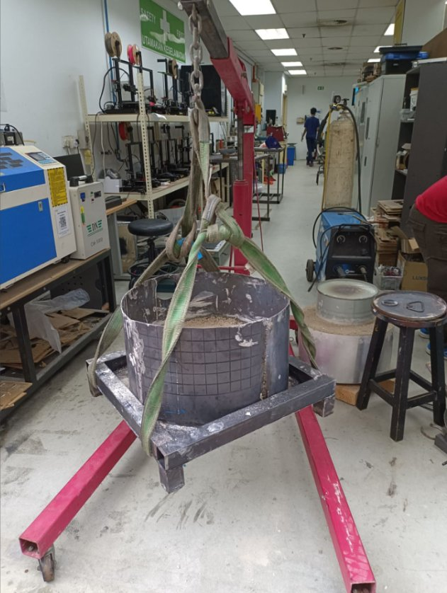
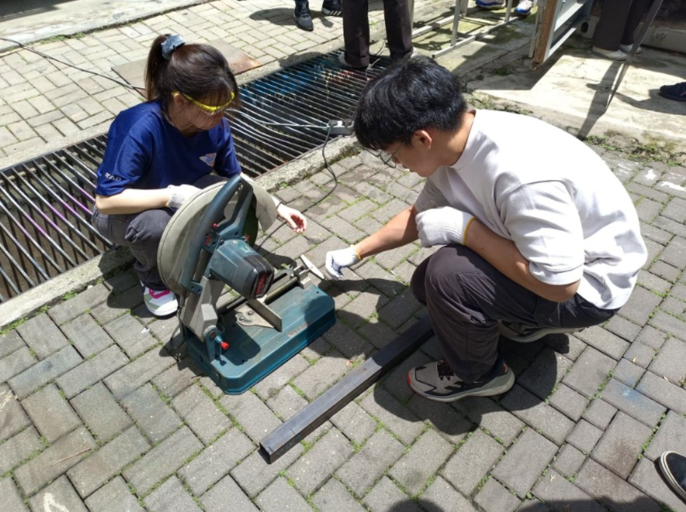
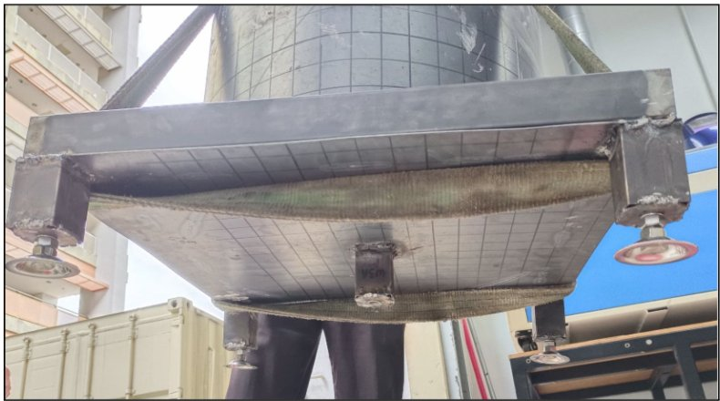
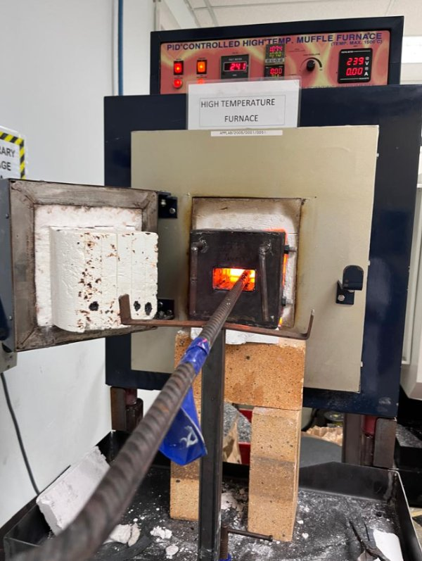
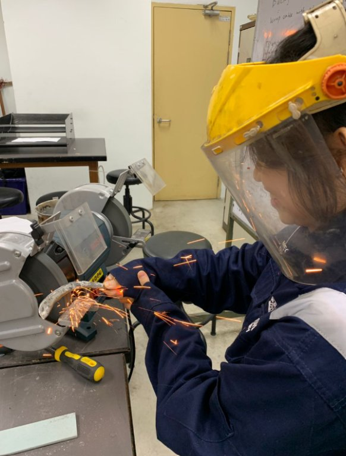
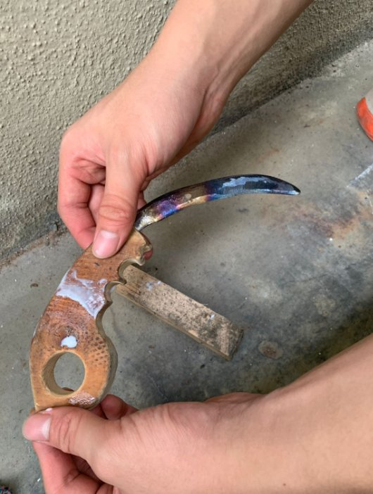

Manufacturing & Workshop Practice
Practical mechanical engineering coursework covering the design and fabrication of a furnace support structure, metalworking and forging exercises, and experience with workshop manufacturing processes.

Project overview
This unit connected manufacturing theory with workshop practice. In our group project, we developed a support stand for a furnace and adapted the design following instructor and technician feedback. Additional exercises involved forging and finishing a metal workpiece, heat-treatment demonstrations and introductory manufacturing processes.
My contribution · Furnace stand
- Prepared the group's initial concept sketch and revised the design after consultations with the lecturer.
- Worked with a teammate to measure and cut square hollow steel sections with an abrasive cut-off saw.
- Removed sharp excess material, ground and cleaned fabricated pieces, and assisted with welding preparation and assembly.
- Helped stabilise the lifted base while the team installed adjustable support components.
My contribution · Manufacturing exercise
- Researched manufacturing approaches and prepared a preliminary design and process plan for a forging exercise.
- Participated in workshop forging, surface grinding and polishing under staff guidance.
- Helped shape and finish the wooden handle and adjust the metal workpiece for assembly.
- Evaluated a different stock material with the team, then adapted the approach when its workability proved less suitable within the available time.
Furnace stand design & fabrication
We revised the furnace stand design and prepared, cut, finished and assembled the steel support structure.


Forging & manual finishing
A supervised academic metalworking exercise that produced a decorative karambit-shaped workpiece. I used the exercise to practise forging, workshop equipment handling and manual finishing.



Broader manufacturing exposure
Materials and processes
The team's lab records document heat treatment, hardness testing, sand casting, laser cutting, 3D printing and metal forming. These sessions gave me exposure to different manufacturing methods.
Engineering lessons
Workshop constraints led to design changes and iterative material choices. The projects helped link design intent with actual manufacturability, safe machine use, team coordination and realistic assembly tolerances.